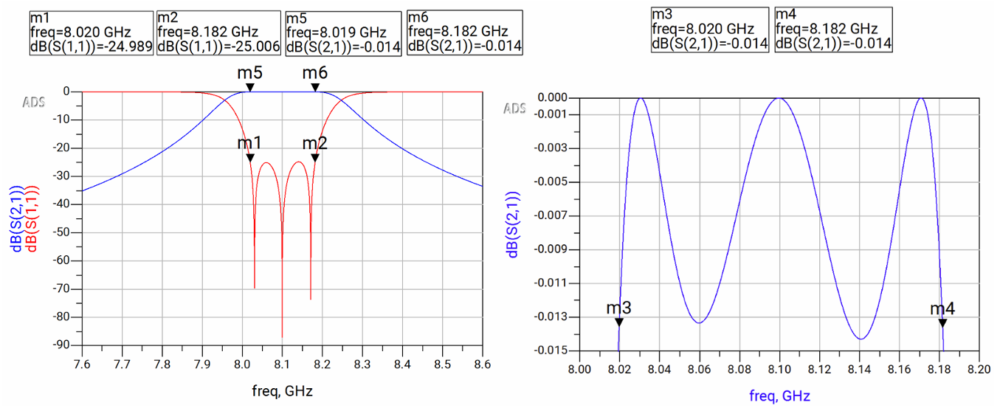
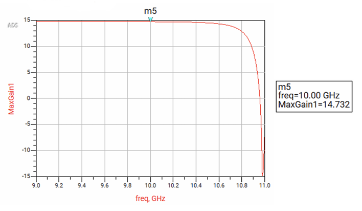
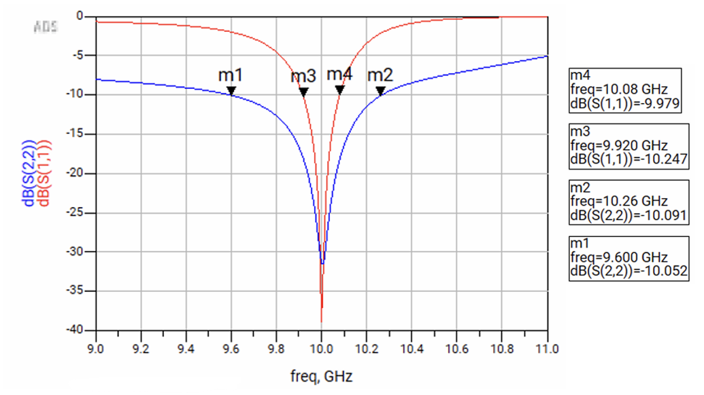
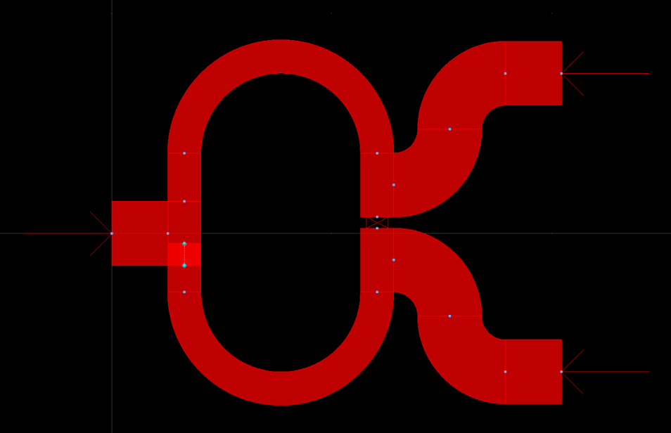
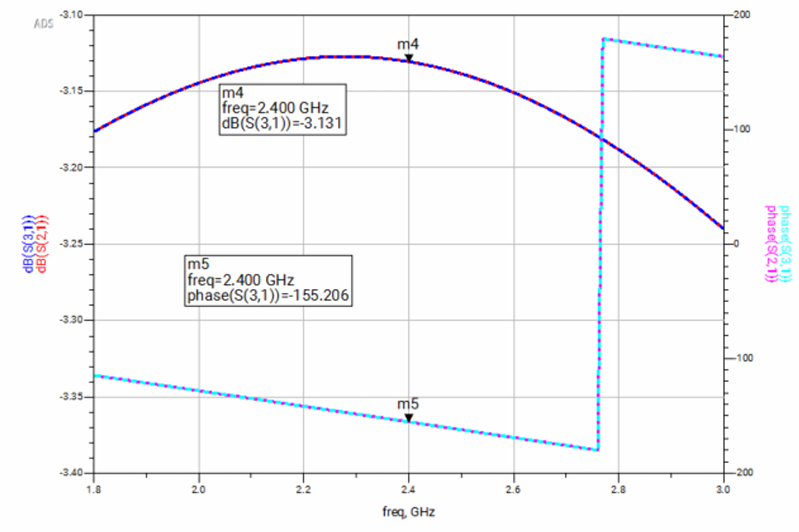

RF & Microwave Engineering
High-Frequency Signal Chains, Passive Filter Design, and Impedance Matching
RF FRONT-END COMPONENTS
8.1 GHz X-Band Microstrip Bandpass Filter

Keysight ADS
3rd Order Chebyshev
Distributed Elements
- Synthesized an 8.1 GHz bandpass filter for high out-of-band rejection using distributed microstrip elements.
- Performed EM/Circuit co-simulation in ADS to account for substrate parasitics and enclosure resonance.
10 GHz High-Gain Low Noise Amplifier


LNA Design
Smith Charts
Stability Analysis
- Designed a 10 GHz GaAs FET amplifier achieving 14.7 dB gain with a focus on Noise Figure (NF) optimization.
- Synthesized input/output matching networks using Smith Charts to achieve < -15 dB Return Loss.
MICROWAVE PASSIVE CIRCUITS
Wilkinson Power Divider

2.4 GHz
Isolation Tuning
Achieved >40 dB port-to-port isolation through optimized microstrip geometries and fringe-field compensation.
90° Hybrid Coupler

Phase Quadrature
I/Q Signals
Verified 90.02° phase quadrature for I/Q applications using ADS Momentum EM simulation.
RFMath: Pythonic Network Solver
Python 3.10
NumPy/Broadcasting
Microwave Theory
Automation
A Python library for microwave circuit analysis. The workstation provides a live example of a two-port lossless transmission line, calculating wide-band frequency responses via cascaded ABCD matrices.
VIEW LIBRARY & RESPONSERF DOMAIN SKILLSET
Tools & Simulation: Keysight ADS (Advanced Design System), Momentum EM, Smith Chart Utility, MATLAB
Design Competencies: Microstrip Layout, S-Parameter Analysis, Impedance Matching, Active RF Circuitry
Measurement: VNA/Spectrum Analyzer Calibration, Signal Integrity, Phase Noise Analysis